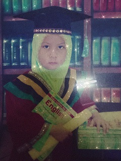
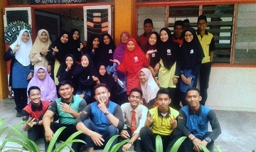
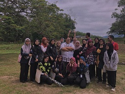

MY EDUCATION
|  |
| According to this picture, when I was 5 and 6 years old, I studied at Pasti Al-Aufa, a school for kids ages 4 and 6. This school is one of the religious schools where I was taught how to study the Quran, prayer and so on. This is a starting point for me to learn and get to know the outside and to get to know new friends as I learn the meaning of friendship. This is where I learned to be self-reliant in the morning because I want to go to school :). My school time is 7am to 1pm. Now I don't know what school it starts at. |
| Sorry, for Sekolah Kebangsaan Kedai Piah, I have no pictures to share. This is because, in this school picture, I do not know where to keep it and I might lose it. Okay, I studied in this school from 1st grade to 6th. Here I get to know a lot of my friends. When I was in grade 3, I was able to serve as what we call "Pengawas Perpustakaan" until level 6. It was when I began to recognize my attitude of responsibility as I worked as a librarian. For UPKK which is Fardhu Ain exam, I got 6A, 2B and for UPSR, I got 2A, 2B and 1C. I am also active in the curriculum and hold several positions for the curriculum. In addition, I was active in sports, including sports, volleyball and netball for school. |
|  | |
| Sekolah Menengah Kebangsaan Dewan Beta was my study place of 13 to 17 year olds from form 1 to form 5. Here I also learned many things about love and grief throughout my studies here. Here, too, I have to face the SPM exam, which is the rule for future determination. Not only was I a primary school that I become "Pengawas Perpustakaan", but in high school I was also a librarian from form 2 to form 5. I was also active in sports and co-curricular activities as I held the position of co-chair of the curriculum. For PT3, I get 5A, 2B, 1C, 2E and try to guess what E is? In form 4 I got second class and I had to choose between account and ict subject. As a result, I was not particularly interested in IT, so I took the account subject seriously. Form 5 is the most important level because of SPM. So, for SPM, I got 6A 3B. | |
|  | |
| After leaving SPM, I waited several months to continue my studies. This is where I was confused about whether to conntinue to STPM or wait for the UPU decision. For UPU I apply more to account and nurse course. But for the 7th option only I apply for the Diploma in Library Management course. After the UPU decision came out, guess what? Indeed, the library and I are inseparable. I got an offer to continue my studies at UITM at the course of the library. Because I wanted to try new experiences and want to experience the life of a university student, I decided to accept this offer. And now, I'm in the library course and now in semester last after facing various challenges from semester 1 until now. Thank God. This is where I learned to be independent because I had to far away from my family after 18 years apart. And at the age of 18, I had to split up to continue my studies. | |